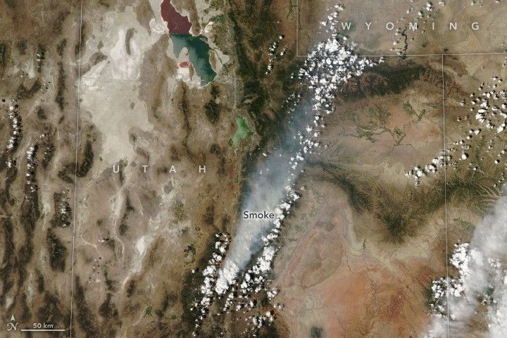

Monroe Canyon Fire Intensifies
The Monroe Canyon fire in central Utah grew rapidly in late July 2025 amid hot, dry, and windy conditions. Burning near the communities of Richfield, Monroe, and Koosharem, the fire began its rapid expansion on the afternoon of July 25, when firefighters reported wind gusts exceeding 60 miles (97 kilometers) per hour.
By the morning of July 28, the fire’s extent had more than doubled to 23,265 acres (9,415 hectares). The blaze continued to burn intensely that day, when the MODIS (Moderate Resolution Imaging Spectroradiometer) on NASA’s Aqua satellite captured this image.
A large smoke plume from the fire drifted hundreds of miles to the northeast, creating hazy skies and degrading air quality in downwind areas.
Fire activity prompted officials to close portions of Fishlake National Forest and issue evacuation notices for nearby residences. According to news reports, several buildings were destroyed, and firefighters worked to prevent additional structures from being lost. Approximately 1,000 personnel were involved in the firefighting response.
A false-color satellite image reveals the fire’s structure, with smoke billowing from areas of active burning along the edges of the burned region (dark brown). The infrared signature of active fire appears in bright orange, while unburned vegetation (light green) and dry land (light brown) surround the affected area.
The OLI (Operational Land Imager) on Landsat 8 captured the false-color image on July 28. This combination of shortwave infrared, near infrared, and visible light (bands 6-5-3) helps distinguish unburned vegetation (green) from recently burned terrain (brown), with orange highlighting areas of active fire.
Over the past decade, the USDA Forest Service has conducted prescribed burns and mechanical thinning in and around Monroe Canyon to encourage aspen regeneration and reduce accumulated brush and dead vegetation. NASA’s FireSense project collected airborne data before, during, and after a prescribed burn in the area in October 2023 to improve science support for operational fire agencies.
According to Utah’s Department of Natural Resources, the fire’s intensity decreased near the edges of these treated areas. This reduction helped firefighters strengthen blackline along the southeastern perimeter and increase containment on that side of the fire.
By the morning of July 31, the Monroe Canyon fire had expanded to 45,964 acres (18,600 hectares) with 11 percent containment. Officials cited not only fire-conducive weather but also record-breaking low fuel moistures as drivers of the extreme fire behavior. A red flag warning remained in effect for central and southern Utah, with low relative humidity and breezy conditions expected to persist.